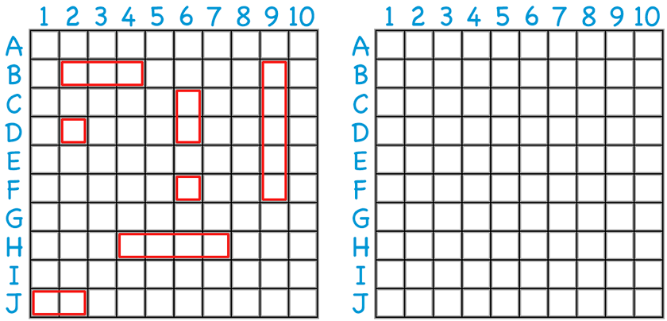
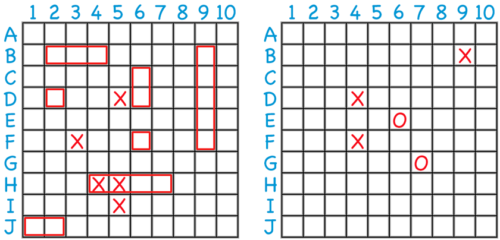

How to Play > Description
Description
This game of guessing, strategy and logical thought dates back to before world war one and is known the world over for being a simple game that can be played with no more than a pencil and two pieces of paper. It is a two player game which has since been released by many board game manufacturers and its popularity can be seen through not only the intricate detail now put into physical and digital renditions of it, but now also in a Hollywood film based on the game.
How to Play > Preparation
Preparation
Each player's fleet consists of the following ships:
- 1 x Aircraft Carrier - 5 squares.
- 1 x Battleship - 4 squares.
- 1 x Submarine - 3 squares.
- 1 x Destroyer - 3 squares.
- 1 x Patrol Boat - 2 squares.
Each player must secretly place their ships on a 10×10 grid, which represents the battlefield. Players also have a second, blank grid used to track their guesses about the opponent’s ships.
How to Play > Play
Play
Players take turns guessing the locations of their opponent’s ships by calling out grid coordinates (e.g., "D5"). If a ship occupies that position, the opponent announces a "hit," and the attacking player marks the hit on their tracking grid. The turn continues until the attacking player misses.
The opponent then takes their turn, following the same process. The first player to successfully hit all occupied squares on their opponent’s board wins the game.